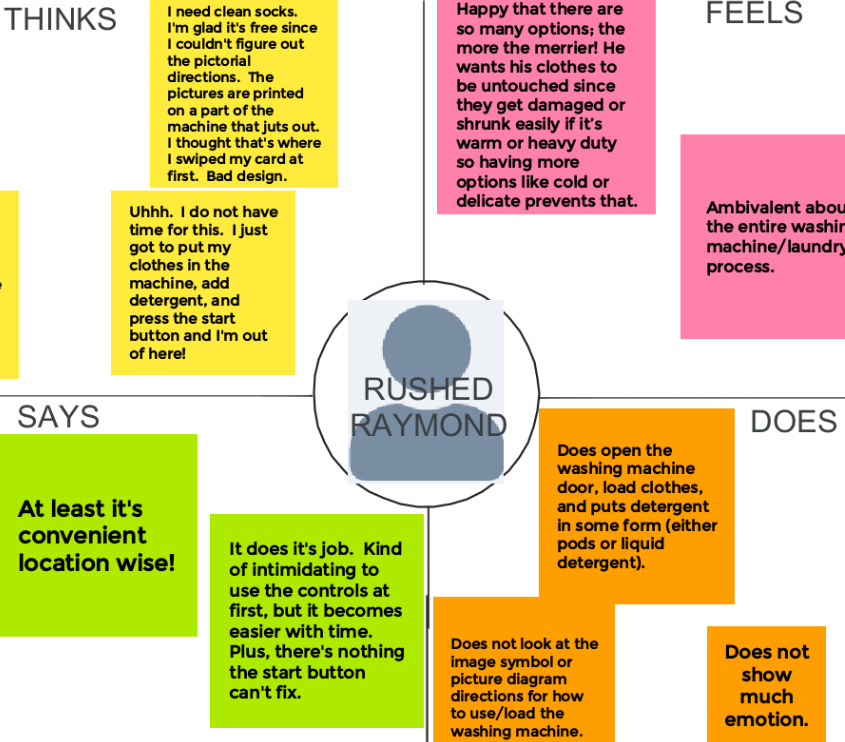
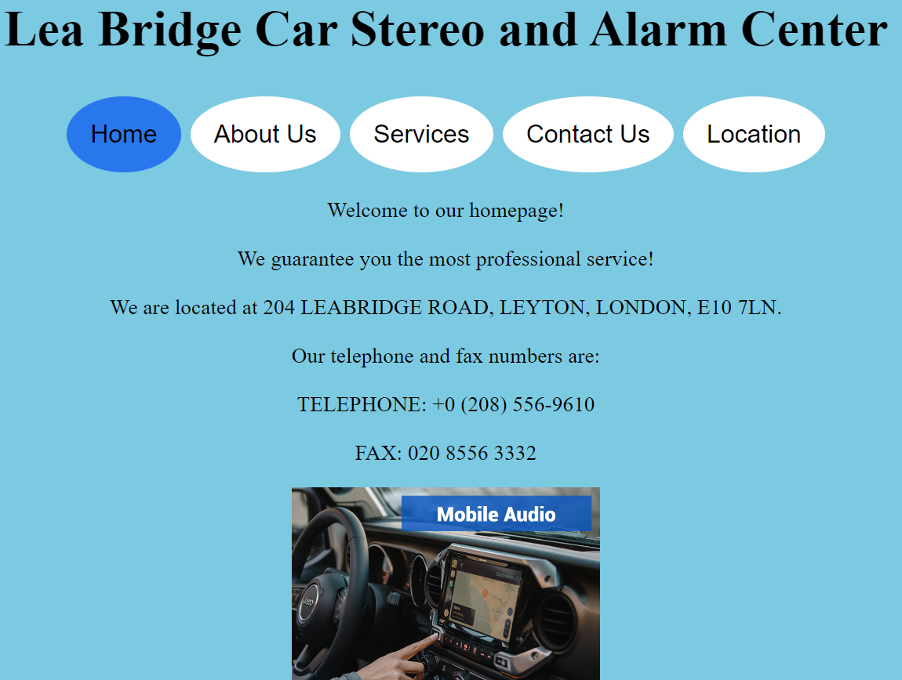
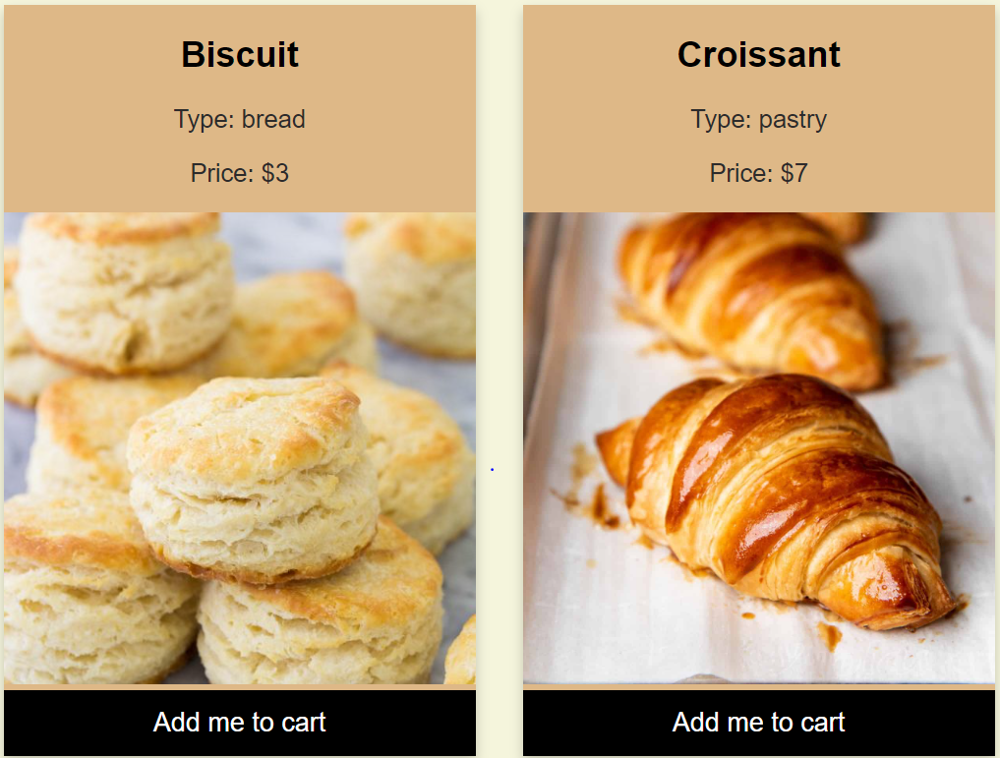

Final Portfolio
Little bit about me: Welcome to my portfolio! I am a senior at Brown studying computer science. I have a ton of different interests, which can be seen by the wide
variety of topics below that I chose as my project themes (laundry, bakeries, healthcare, and a car repairshop being a random smattering of some of them).
The goal of this portfolio is to portray something called 'character'. I'm not sure I know what that is or really means. So, instead of trying to create
something fake and artificially cohesive that doesn't represent me, I'm leaving it as a disorganized mess of a wide range of interests and topics because that's much
more representative of who I am. So my 'theme' or 'character' for this portfolio is itself a lack of a cohesive single common theme, because I have way too
many interests to pick just one character or just one theme.
Context/Problem
- Each project solves a different problem.
- Personas-Storyboard solves the problem of how to abstract out a model of the user of an interface given real world observations and interviews of users. We care about this problem because not every user is the same and if we want to match the user's expectations then we need a model/abstraction to be able to do so.
- Responsive Redesign solves the problem of how do you make a website readable, clear, user friendly, and have a nice layout when the screensize changes. We care about this problem because not all devices are the same size.
- Iterative Design solves the problem of how do we incorporate user feedback to improve upon a product. We care about this problem because user opinions matter.
- Development solves the problem of how do we make a website interactive. We care about this problem because many of the functionality of the modern internet relies on the ability for a website to be intereactive.
Research/Feedback
My audience and what they want/think varied from project to project. The audience for Personas-Storyboard were laundry machine users and designers, for Responsive Redesign it was the car repair shop whose website I redesigned and the users of said shop, for Iterative Design it was both FloatHealth, which is the startup I designed a hi-fi prototype for, as well as users and workers of FloatHealth including sick people and nurses, and for Development it would be the customers of the bakery I created the website for.
Design Iterations
The only iterative project completed was Iterative Design and the tradeoffs and design decisions are explained within the project itself.
Conclusions
The biggest lessons, insights, and takeaways that I learned across all four projects were that perfection doesn't exist, everyone is always going to have conflicting opinions with someone else, but incorporating as much feedback as possible into the design is the best path forward!
Projects
Personas-Storyboard
Interface interaction observations for personas and storyboarding
Responsive Redesign
Redesigning an existing website for dynamic screensizes
Iterative Design

Iteratively implementing a website for a startup
Development
Building an interactive website